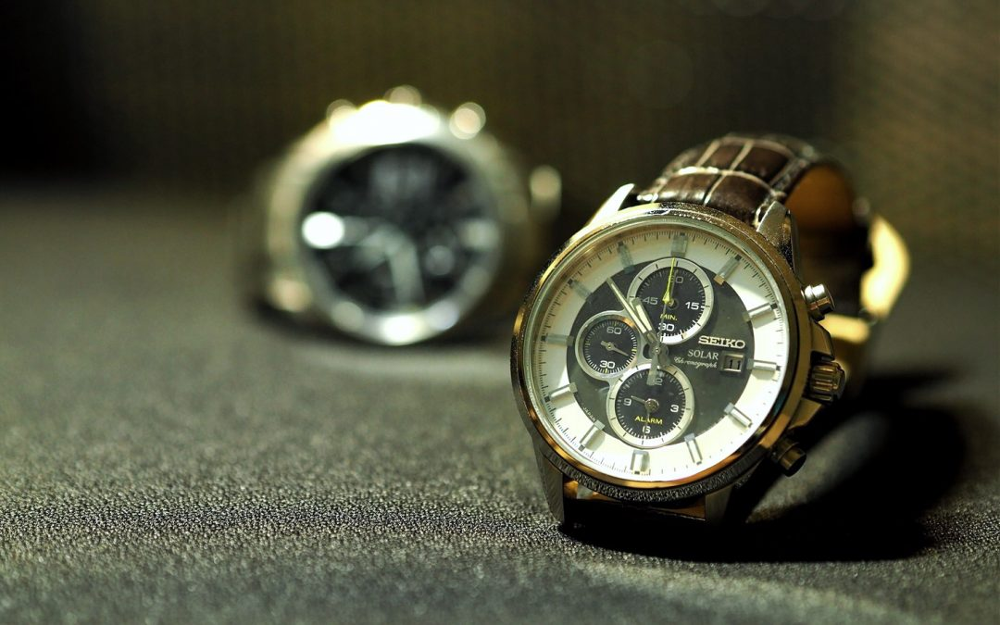

Watches.
Когда появились наручные часы
Виды наручных часов
Много ли людей польюзуются наручными часами?

Наручные часы
прибор, носимый на запястье и служащий для индикации текущего времени и измерения временных интервалов. Наибольшее распространение получили механические, кварцевые и электронные наручные часы.